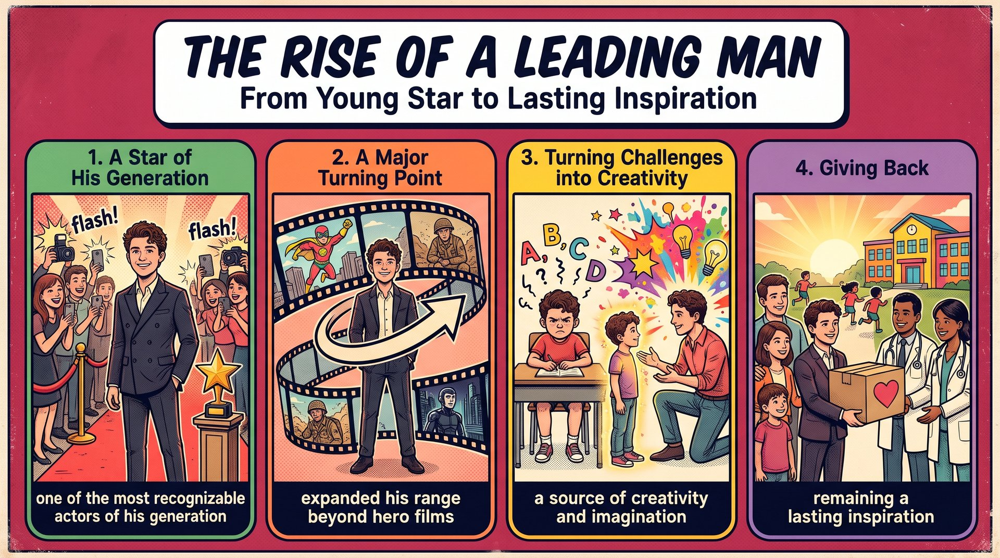

十年來靠重要電影角色累積全球數百萬粉絲，2019 年入選《富比士》歐洲 30 位 30 歲以下傑出人物榜。
one of the most recognizable actors of his generation《蜘蛛人：無家日》成為生涯最大成功；同年在《Cherry》《混沌漫步》接下複雜角色，展現多才多藝。
expanded his range beyond superhero films坦承讀寫障礙與過動症，不讓挑戰定義自己；擁抱內在小孩，造就極具活力的銀幕魅力。
a source of creativity and imagination成立兄弟信託基金會為醫學研究募款，未來想在英格蘭創辦免費學校，始終是激勵人心的榜樣。
remaining a lasting inspirationTom Holland (S) + is (V) + one of the most recognizable actors (C)。
of his generation 是介系詞片語，限定比較的範圍。
one of the + 最高級 + 複數名詞：名詞一定加 s（✗ one of the most recognizable actor）；recognizable 是 recognize 去 e 加 -able。
Tom Holland is（主幹）one of the most recognizable actors（補語（最高級））of his generation.（介系詞片語（範圍））語塊 1（湯姆・霍蘭德是）➔ 語塊 3 提前（同世代）➔ 語塊 2（最具辨識度的演員之一）
主詞和 be 動詞先翻「湯姆・霍蘭德是」，接著別急著說「最……之一」。
Tom Holland is one of the actors，形容詞最高級 most recognizable 夾在中間，句尾再背一個介系詞背包 of his generation 說明「跟誰比」。one of the most，馬上檢查後面名詞有沒有加 s；學測改錯題最愛拿掉 s 讓你抓。of／in 後面就是比較範圍：of 接一群人或一段時間（of his generation、of all time），in 接地方或團體（in the world、in our class）。
one of the + 最高級 + 複數名詞；同義：among the most recognizable actors。A is one of the most ... N of his／her generation.he (S) + has built (V) + a strong career (O)。
Over the past decade，從過去十年一路累積到現在的成果。
that have gained him ... 是主格關代子句，修飾 roles；through major film roles 是介系詞片語表手段。
Over the past decade 是完成式的訊號；gain sb sth（為某人贏得某物）是雙受詞；millions of fans 不加數字，有數字時說 two million fans。
Over the past decade,（時間副詞片語）he has built a strong career（主幹）through major film roles（介系詞片語（手段））that have gained him millions of fans around the world.（主格關代子句（修飾 roles））語塊 1（過去十年來）➔ 語塊 3 提前（靠著多部重要的電影角色）➔ 語塊 2（建立起穩固的演藝事業）➔ 語塊 4 另起（這些角色為他贏得了全球數百萬名粉絲）
時間片語 Over the past decade 在句首，照順序先翻「過去十年來」。
major film roles，不是動詞，所以它是在修飾名詞。___ have gained him millions of fans 缺主詞，誰贏得粉絲？就是 roles。缺主詞就是主格關代。gain sb sth＝win sb sth（為某人贏得）；millions of 不加數字。Over the past decade, S has built ... through ... 時間＋完成式＋手段一次到位。he (S) + was included (V) + on the Forbes 30 Under 30 Europe list（被動語態）。
a sign of ... 是同位語，補充說明前面整件事的意義。
be included on a list（被列入榜單）；同位語 , a sign of N 可改寫成 , which was a sign of N；rising status／growing influence 都是 V-ing 當形容詞，表「正在上升的」。
By 2019,（介系詞片語（時間））he was included on the Forbes 30 Under 30 Europe list,（主幹（被動））a sign of his rising status and growing influence（同位語）in the global film industry.（介系詞片語（範圍））語塊 1（到了 2019 年）➔ 語塊 2（他已入選……榜）➔ 語塊 3 補主詞（這象徵）➔ 語塊 4 提前（在全球電影產業）➔ 語塊 3 後半（地位攀升、影響力擴大）
By 2019 先翻「到了 2019 年」，再接主句。
a sign of ...，回頭解釋前面整件事代表什麼。a sign。這就是同位語，不是新的句子。and it was a sign ...，就用這招，句子更緊湊。
rising／growing 現在分詞當形容詞＝正在上升的；status 指社會地位，不可和 state 混淆。..., a sign of his rising status. 一句話同時給事實和評論。The year 2021 (S) + marked (V) + a major turning point (O)。
for Holland 是介系詞片語，說明是誰的轉捩點。
mark a turning point（標誌著轉捩點）是固定搭配；The year 2021 是同位語，比單說 2021 更正式。
The year 2021（主詞（同位語））marked a major turning point（動詞＋受詞）for Holland.（介系詞片語）語塊 1（2021 年）➔ 語塊 2 的動詞（是）➔ 語塊 3 提前（霍蘭德的）➔ 語塊 2 的受詞（一大轉捩點）
這句短，從主詞「2021 年」直接開始。
The year 2021。英文很愛用「時間、事件」當主詞，配上 mark、see、witness 這類動詞，句子短又有力。In 2021, Holland had a big change.，意思對但很平。The year 2021 marked a turning point for Holland.mark a turning point／the beginning of N；turning point＝a time of important change。The year 20XX marked a turning point for me.He (S) + starred (V) + in Spider-Man: No Way Home。
which became his biggest career success 是非限定關代子句，補充說明這部電影。
star in a film（主演電影），star 當動詞要加 in；非限定子句前有逗號，不能用 that；career success 是名詞修飾名詞。
He starred in Spider-Man: No Way Home,（主幹）which became his biggest career success.（非限定關代子句）語塊 1（他主演了《蜘蛛人：無家日》）➔ 語塊 2（這部片成為他演藝生涯中最大的成功）
主句「他主演了《蜘蛛人：無家日》」照順序翻。
___ became his biggest career success 缺主詞，主格關代。star in a film（主演）vs. a film starring sb（由某人主演的電影）。She starred in ..., which became ... 一句帶出作品與成果。The film's impact (S) + confirmed (V) + his place (O)。
as a leading figure in big-budget cinema 是介系詞片語，說明 place 的內容。
confirm one's place as N（確立某人作為……的地位）；big-budget 是複合形容詞（高成本的、大製作的）；leading figure（領軍人物）。
The film's impact（主詞）confirmed his place（動詞＋受詞）as a leading figure in big-budget cinema.（介系詞片語（說明地位））語塊 1（這部片的影響力）➔ 語塊 2 的動詞（確立了他）➔ 語塊 3 提前（在大製作電影界的領軍）➔ 語塊 2 的受詞（地位）
主詞「這部片的影響力」先翻，動詞 confirmed 用「確立了」。
The film's impact confirmed his place，後面的 as a leading figure 是介系詞 as（作為），不是連接詞 as（因為、當……時）。a leading figure，沒有動詞，就是介系詞「作為」。confirm／secure one's place as N；a leading figure in N（某領域的領軍人物）。The success confirmed her place as a leading figure in ...he (S) + expanded (V) + his range (O)。
playing a troubled man 是分詞構句（＝and he played ...），dealing with ... 是分詞片語修飾 man（＝who was dealing with ...）。
expand one's range（拓展戲路）；deal with（面對、處理）；分詞片語修飾名詞＝省略主格關代＋be 動詞（Language Notes 1）。
That same year,（時間副詞）he expanded his range（主幹）in Cherry,（介系詞片語（作品））playing a troubled man（分詞構句（＝and he played））dealing with the emotional pain of war.（分詞片語（修飾 man））語塊 1（同一年）➔ 語塊 3 提前（在《Cherry》中）➔ 語塊 2（拓展戲路）➔ 語塊 4（飾演一名）➔ 語塊 5 提前（承受戰爭情緒創傷、內心困頓的）➔ 男子
That same year 先翻「同一年」，接著要調整片名的位置。
playing：往左看——前面是逗號和完整主句 he expanded his range in Cherry。逗號後的 V-ing 補充主詞「同時做了什麼」，這是分詞構句，還原成 and he played ...。dealing：往左看——緊貼著名詞 a troubled man，中間沒有逗號。名詞後直接接 V-ing，就是在修飾這個名詞，還原成 who was dealing with ...。a man dealing with ...＝a man who was dealing with ...；被動用 p.p.：a man injured in the war。S + V, playing a N + V-ing ...，學測作文的高分長句。He (S) + also appeared (V) + in the dystopian film Chaos Walking。
taking on a complex and demanding part 是分詞構句（＝and he took on ...）。
appear in a film（演出電影）；take on 在此是「承擔、接下（角色）」（Language Notes 2a）；demanding（要求高的、吃重的）。
He also appeared in the dystopian film Chaos Walking,（主幹）taking on（分詞構句動詞（＝and he took on））a complex and demanding part.（受詞）語塊 1（他也演出了反烏托邦電影《混沌漫步》）➔ 語塊 2（接下）➔ 語塊 3（一個複雜又吃重的角色）
主句照順序翻，片名前加上類型「反烏托邦電影」。
He also appeared in ... Chaos Walking。taking on ... 沒有主詞，主詞就是前面的 He。這是分詞構句，還原成 and he took on a complex and demanding part。He appeared in the film and he took on a part 也對，但兩個 he 很囉嗦，改成分詞構句就乾淨。
take on a role／a task／a challenge（接下）；take on a new look（呈現）；take on the champion（挑戰）。I took on the role of class leader.These diverse performances (S) + called (V) + attention (O) + to his versatility and professional growth。
to his versatility and professional growth 是 call attention to 的介系詞受詞，beyond superhero films 修飾 growth。
call／draw attention to N（引起對……的注意），to 是介系詞；versatility 不可數，指戲路多變寬廣；diverse（多元的）。
These diverse performances（主詞）called attention to（動詞片語）his versatility and professional growth（介系詞受詞）beyond superhero films.（介系詞片語（修飾 growth））語塊 1（這些多元的演出）➔ 語塊 2（讓人注意到）➔ 語塊 3 前半（他的多才多藝，以及他）➔ 語塊 4 提前（在超級英雄電影之外的）➔ 語塊 3 後半（專業成長）
主詞「這些多元的演出」先翻，動詞片語改成「讓人注意到」。
These performances called attention，後面兩個介系詞背包：to his versatility and professional growth（注意什麼）beyond superhero films（在哪之外的成長）call attention to 的 to 是介系詞，後面接名詞或 V-ing：✗ call attention to show；✓ call attention to showing。look forward to、be used to、commitment to（本課第三段）。
call attention to＝draw attention to＝highlight。These experiences called attention to my ... 用在段落結尾很漂亮。2026 (S) + is proving (V) + to be another significant year (C)。
owing to his roles in ... 是複合介系詞片語，交代原因；his fourth Spider-Man film, Spider-Man: Brand New Day 是同位語。
prove (to be) + N／Adj.（證明是、結果是），prove 在此是連綴動詞；owing to N＝because of N，後接名詞不接子句。
2026 is proving to be another significant year for Holland,（主幹）owing to his roles in The Odyssey（複合介系詞片語（原因））and his fourth Spider-Man film, Spider-Man: Brand New Day.（對等名詞＋同位語）語塊 1（2026 年看來又是霍蘭德意義重大的一年）➔ 語塊 2（這要歸功於他在《奧德賽》）➔ 語塊 3（以及他第四部蜘蛛人電影《……》）➔ 收尾（中的角色）
先翻主句「2026 年看來又是霍蘭德意義重大的一年」，is proving to be 用「看來」帶過。
owing to 帶出來。很多同學把它當成 because，後面接了完整句，直接扣分。owing to his roles：後面是名詞片語 his roles，沒有動詞。because he has roles ...（because 是連接詞，接 S＋V）。owing to／due to／because of／thanks to + N。學測克漏字常把 because 和 because of 放在一起考，往右看有沒有動詞就能三秒判斷。
prove (to be) + Adj.／N.（結果是）；owing to＝due to＝because of。This year is proving to be a big year for ...Holland's back-to-back projects (S) + reflect (V) + his hard work and commitment (O)。
to his craft 是 commitment 的介系詞片語。
commitment to N／V-ing（對……的投入），to 是介系詞；back-to-back（連續的）是複合形容詞；craft 指需要技巧的專業，演員的 craft 就是「演技、演藝專業」。
Holland's back-to-back projects（主詞）reflect his hard work（動詞＋受詞一）and commitment to his craft.（受詞二＋介系詞片語）語塊 1（霍蘭德接連不斷的作品）➔ 語塊 2（反映出他的努力）➔ 語塊 3 調序（以及【對演藝專業的】投入）
主詞「霍蘭德接連不斷的作品」先翻，動詞 reflect 用「反映出」。
hard work 和 commitment 兩個名詞並排，不是連接句子。commitment to：commitment to improving his skills，✗ commitment to improve。dedication to、contribution to、key to success，學測翻譯題很愛考。
reflect＝show＝demonstrate；commitment to N／V-ing。Her achievements reflect her hard work and commitment to ...Tom Holland (S) + is known (V) + for his ... personality。
for his energetic, kind, and even goofy personality 是介系詞片語，三個形容詞並列修飾 personality。
be known for N（以……著稱）vs. be known as N（以……身分為人所知）vs. be known to sb（為某人所知）；三個形容詞並列用 A, B, and C。
Tom Holland is known for（主幹（被動片語））his energetic, kind, and even goofy personality.（介系詞受詞）語塊 1 前半（湯姆・霍蘭德以）➔ 語塊 2 夾入（充滿活力、善良，甚至有點傻氣的個性）➔ 語塊 1 後半（著稱）
這句是第二部分的開頭，先翻主詞「湯姆・霍蘭德」。
Tom Holland is known，後面掛 for + 原因。這組片語是學測必考的三胞胎：be known for + 特色：以……著稱（Taiwan is known for its night markets.）be known as + 身分：以……身分為人所知（He is known as Spider-Man.）be known to + 人：為某人所知（His name is known to everyone.）be known for／as／to＝be famous for（特色）。She is known for her ... and ... personality.He (S) + is described (V) + as relatable and grounded（被動）。
describe A as B 的被動式 A is described as B。
describe A as B（把 A 形容為 B），as 後可接形容詞或名詞；relatable（讓人有共鳴的）、grounded（腳踏實地的，Info Box）。
He is often described as（主幹（被動））relatable and grounded.（補語（形容詞））語塊 1（他常被形容為）➔ 語塊 2（讓人有共鳴而且腳踏實地）
被動句「他常被形容為」中文也自然，直接照順序翻。
describe A as B 是一組「把 A 看成 B」的動詞家族：view A as B、see A as B、regard A as B、think of A as B。下一段的 views it as a source of creativity 也是同一招。He is described as relatable.describe／view／regard／see A as B；grounded＝down-to-earth。She is often described as ... and ...he (S) + has earned (V) + strong positive reactions (O)。
In addition 是轉折副詞（此外）；for speaking honestly about ... 是介系詞＋動名詞，交代原因。
earn sth for V-ing（因……而贏得）；介系詞 for 後接動名詞 speaking；speak honestly about N（坦率談論）；struggles 指個人的困境、掙扎，常用複數。
In addition,（轉折副詞）he has earned strong positive reactions（主幹）for speaking honestly about his personal struggles.（介系詞＋動名詞（原因））語塊 1（此外）➔ 語塊 3 提前（他因坦率談論自己的個人困境）➔ 語塊 2（而贏得熱烈的正面迴響）
In addition 先翻「此外」，接著主詞「他」。
In addition, 後面有逗號，接完整句，它是轉折副詞「此外」。In addition to acting, he works for charity.，多了 to，就變介系詞，後面只能接名詞或 V-ing。for speaking 是另一個考點：介系詞 for 後面接動名詞，表示「因為做了……」。同類：thank sb for helping、be praised for being honest。
In addition, S + V＝Besides／Moreover；In addition to + N／V-ing。In addition, she has earned respect for ...He (S) + has discussed (V) + his experiences (O)。
with dyslexia and ADHD 是介系詞片語，修飾 experiences。
discuss 是及物動詞，直接接受詞，✗ discuss about；experience with N（與……有關的經歷）；dyslexia、ADHD 見醫學小辭典。
He has openly discussed（主幹）his experiences（受詞）with dyslexia and ADHD.（介系詞片語（修飾 experiences））語塊 1（他曾公開談論）➔ 語塊 2 前半（自己）➔ 語塊 3 提前（患有讀寫障礙和過動症的）➔ 語塊 2 後半（經歷）
主句「他曾公開談論自己……的經歷」先抓出來。
He has discussed his experiences，後面 with dyslexia and ADHD 說明是哪方面的經歷。discuss about。discuss 本身就是及物動詞，後面直接接受詞。同類不加介系詞的：discuss、mention、enter、marry、reach。discuss sth＝talk about sth；✗ I have openly talked about my experience with ...he (S) + found (V) + spelling and reading (O) + difficult and sometimes frustrating (C)，but he (S) + never allowed (V) + those challenges (O) + to define him。
allow ... to define him 照順序譯「讓……定義自己」。
find + O + Adj.（覺得……很……），✗ found spelling was difficult 也可但要加 that；frustrating 修飾事物，frustrated 修飾人；allow sb/sth to V。
As a child,（介系詞片語（時間））he found spelling and reading difficult and sometimes frustrating,（主句一（find + O + C））but he never allowed those challenges（主句二）to define him.（不定詞（受詞補語））語塊 1（小時候）➔ 語塊 2（他覺得拼字和閱讀很困難，有時甚至令人沮喪）➔ 語塊 3（但他從不讓這些挑戰）➔ 語塊 4（定義自己）
As a child 先翻「小時候」，再進入前半的主句。
but：前半說童年的挫折，後半轉成「他沒被打倒」，典型的先抑後揚，作文寫勵志段落最好用。find + 受詞 + 形容詞：眼睛往右看——found 後面是 spelling and reading（受詞），再後面是 difficult（補語），中間沒有 be 動詞，這時 find 是「覺得」。frustrating 是「讓人沮喪的」（修飾事物）；frustrated 是「感到沮喪的」（修飾人）。拼字讓人沮喪 ➔ frustrating。
find + O + Adj.；frustrating（令人沮喪）vs. frustrated（感到沮喪）。..., but I never allowed it to define me.He (S) + credits (V) + his parents (O) + for their help, patience, and constant encouragement。
credit A for B（把 B 歸功於 A）；during his early years 是時間介系詞片語。
credit A for B＝attribute B to A（Info Box）；三個名詞並列 help, patience, and constant encouragement；early years 指童年。
He often credits his parents（主幹）for their help, patience, and constant encouragement（介系詞片語（歸功的內容））during his early years.（時間片語）語塊 1（他常把功勞歸於父母）➔ 語塊 3 提前（在他童年時期）➔ 語塊 2（給予的幫助、耐心與不斷的鼓勵）
主幹「他常把功勞歸於父母」先講清楚是誰的功勞。
He credits his parents，後面掛兩個背包：for their help, patience, and constant encouragement（歸功什麼）during his early years（什麼時候）credit A for B 的方向：A 是人（功臣），B 是功勞。反過來說要換成 attribute B to A：He attributes his success to his parents. 兩個片語受詞順序相反，選擇題很愛考。
credit A for B＝thank A for B＝attribute B to A。I credit my teacher for her patience and encouragement.Holland (S) + views (V) + it (O) + as a source of creativity and imagination (C)。
Rather than seeing ADHD as a weakness 是介系詞片語（rather than＋V-ing），表「而不是」。
view／see A as B（把 A 視為 B）；rather than V-ing 放句首時用動名詞；a source of N（……的來源）；creativity 不可數。
Rather than seeing ADHD as a weakness,（介系詞片語（否定對比））Holland views it（主幹）as a source of creativity and imagination.（受詞補語）語塊 1（霍蘭德不把過動症視為弱點）➔ 語塊 2（反而把它看作）➔ 語塊 3（創造力與想像力的來源）
這句先否定、後肯定，翻的時候要把主詞霍蘭德拉到最前面。
Rather than ... 先把錯誤的看法推開，再端出正確看法，是議論文很好用的對比句。He chose to act rather than complain.see／view A as B，同一個句型重複兩次，對比更清楚。Instead of seeing ADHD as a weakness, he views it as a strength.
rather than＝instead of；view／see／regard A as B。Rather than seeing X as a problem, we can view it as a chance.He (S) + has explained (V) + that ... (O)。
that 引導名詞子句當 explained 的受詞；子句內主詞是動名詞 embracing his “inner child”，動詞 helps 用單數。
help sb (to) V，to 可省；動名詞主詞用單數動詞；prepare for N（為……做準備）；embrace（欣然接受；擁抱）。
He has explained that（主幹＋名詞子句引導詞）embracing his “inner child”（名詞子句主詞（動名詞））helps him prepare for complex roles.（名詞子句動詞＋受詞）語塊 1（他曾解釋）➔ 語塊 2（擁抱自己的「內在小孩」）➔ 語塊 3（有助於他為複雜的角色做準備）
主句「他曾解釋」先翻，that 不用翻出來，直接用逗號帶到內容。
has explained，不是名詞，所以這個 that 不是關代。embracing his inner child helps him prepare ... 主詞（embracing ...）動詞（helps）都齊全，是一個完整句。embracing his “inner child” 是動名詞，一律當單數，所以是 helps 不是 help。
help sb (to) V；動名詞主詞：Reading books helps me relax.He has explained that ...，報導文體常用 explain／say／point out。This view (S) + has shaped (V) + his highly dynamic screen presence (O)。
shape 當動詞是「塑造、影響」；highly + Adj.（非常、高度地）；screen presence 指銀幕魅力（Info Box）。
This view（主詞）has shaped（動詞）his highly dynamic screen presence.（受詞）語塊 1（這種觀點）➔ 語塊 2（塑造了）➔ 語塊 3（他極具活力的銀幕魅力）
這句順著翻就好，主詞「這種觀點」回指上一句。
This view 把上一句他的想法整個打包回指，再接一個新的結果。This view／This experience／This decision + V 開頭就能讓段落有邏輯。highly 是「非常」（highly recommended、highly dynamic），不是「高高地」；表示高度的副詞是 high（fly high）。
shape＝influence＝form；highly＝very。This experience has shaped my ...Holland (S) + is involved (V) + in charity work。
Beyond acting 是介系詞片語（除了……之外）；to improve society and help those in need 是不定詞表目的。
be (deeply) involved in N（積極投入）；beyond N（除了……之外）；those in need＝people who need help；charity 不可數。
Beyond acting,（介系詞片語）Holland is deeply involved in charity work（主幹）to improve society（不定詞（目的））and help those in need.（不定詞（目的））語塊 1（除了演戲之外）➔ 語塊 2（霍蘭德也積極投入慈善工作）➔ 語塊 3（改善社會）➔ 語塊 4（並幫助有需要的人）
Beyond acting 先翻「除了演戲之外」，主句補「也」呼應。
Holland is involved in charity work，後面背著不定詞 to improve ... and (to) help ...，and 只連接兩個動詞，第二個 to 省略。those in need：those 是代名詞（那些人），in need 是介系詞片語修飾 those，等於 those who are in need。help people who need help 很囉嗦，help those in need 一次到位。
be involved in＝take part in＝participate in。I am deeply involved in volunteer work to help those in need.the Holland family (S) + founded (V) + The Brothers Trust (O)。
which supports health and social programs 是非限定關代子句，補充說明基金會。
found（創立）的三態 found-founded-founded，別和 find-found-found 混淆；專有名詞後的關代子句一定加逗號。
In 2017,（時間片語）the Holland family founded The Brothers Trust,（主幹）which supports health and social programs.（非限定關代子句）語塊 1（2017 年）➔ 語塊 2（霍蘭德一家創立了「兄弟信託基金會」）➔ 語塊 3（支持健康與社會方面的計畫）
時間 In 2017 先翻，接著主句「霍蘭德一家創立了……」。
The Brothers Trust。世界上只有這一個基金會，不需要「限定是哪一個」，所以只能用非限定子句，that 出局。___ supports health and social programs 缺主詞，主格關代，動詞 supports 跟著單數的 Trust。founded 是 found（創立）的過去式，不是 find 的過去式 found。看到 founded 後面接組織名稱，就是「創立」。
found-founded-founded（創立）vs. find-found-found（找到）；set up＝found。In 20XX, she founded ..., which helps ...he (S) + has helped (V) + raise funds (O)。
Through this organization 表手段；for medical research for various conditions 是兩層 for 片語。
help (to) V，to 可省；raise funds／money for N（為……募款）；conditions 在醫療語境指「疾病、病症」。
Through this organization,（介系詞片語（手段））he has helped raise funds（主幹）for medical research（介系詞片語（目的））for various conditions.（介系詞片語（修飾 research））語塊 1（透過這個組織）➔ 語塊 2 主詞（他已協助）➔ 語塊 4 提前（為各種疾病的）➔ 語塊 3（醫學研究）➔ 語塊 2 動詞壓軸（募集資金）
Through this organization 先翻「透過這個組織」，再找主詞動詞。
he has helped raise funds，後面兩個 for 背包串在一起：for medical research：錢拿去做什麼。for various conditions：哪方面的研究。help raise 中間省略了 to，help 後面接原形或 to V 都對。
raise funds／money for N＝collect donations for N。Through the club, we have helped raise money for ...Holland's long-term ambition (S) + is (V) + to set up a free school (C)。
Looking ahead 是獨立分詞片語（展望未來）；that can compete with ... 是主格關代子句，修飾 school。
set up 在此是「創建、成立」（Language Notes 1a）；ambition is to V（不定詞當補語）；compete with sb（與……競爭）；Looking ahead 是獨立分詞片語（Info Box）。
Looking ahead,（獨立分詞片語）Holland's long-term ambition is（主幹）to set up a free school in England（不定詞（補語））that can compete with private schools in the country.（主格關代子句（修飾 school））語塊 1（展望未來）➔ 語塊 2（霍蘭德的長期抱負是）➔ 語塊 3 的地點提前（在英格蘭）➔ 語塊 3 動詞（創辦）➔ 語塊 4 提前（一所能與國內私立學校競爭的）➔ 語塊 3 名詞（免費學校）
Looking ahead 先翻「展望未來」，接著主詞「霍蘭德的長期抱負是」。
Looking ahead：一般分詞構句的主詞要和主句一致，但這裡主句主詞是 ambition，抱負不會「往前看」。它是固定的獨立分詞片語，跟 Generally speaking、Judging from ... 同一類，可以直接用。that：往左看——前面是 a free school in England，有先行詞；往右看——___ can compete with private schools 缺主詞。名詞後＋缺主詞 ➔ 主格關代。set up＝found＝establish；compete with／against sb。Looking ahead, my goal is to ... 作文結尾段最好用的開頭。he (S) + continues (V) + to show kindness and perseverance (O)。
Through both his career and charity work 表手段；while remaining a lasting inspiration 是 while＋分詞，表同時。
remain + N 連綴動詞（Language Notes 2）；while + V-ing＝while he remains；both A and B；continue to V／V-ing。
Through both his career and charity work,（介系詞片語（手段））he continues to show kindness and perseverance（主幹）while remaining a lasting inspiration.（while＋分詞（同時））語塊 1（透過演藝事業與慈善工作）➔ 語塊 2（他持續展現善良與毅力）➔ 語塊 3（同時始終是激勵人心的榜樣）
Through 開頭的手段先翻「透過演藝事業與慈善工作」。
while remaining a lasting inspiration：while 是連接詞，後面本來應該是 he remains，因為主詞和主句一樣是 he，就省略主詞、動詞改 V-ing。同類還有 when using、before leaving、after finishing。a lasting inspiration，remain 是連綴動詞，就像 be 動詞一樣接補語，不能加受詞介系詞。remain + N／Adj.：remain close friends／remain quiet；while V-ing＝while S + V。..., she continues to ... while remaining an inspiration to many.| 步驟 | 課文示範 |
|---|---|
| 原句 | playing a troubled man who was dealing with the emotional pain of war |
| ① 刪主格關代＋be | playing a troubled man |
| ② 結果 | playing a troubled man dealing with the emotional pain of war |
| 主動 V-ing | 被動 p.p. |
|---|---|
| The boy sitting by the window is my brother. 坐在窗戶旁邊的男孩是我弟弟。 | The car parked near the café belongs to Mia. 停在咖啡館附近的那輛車是米雅的。 |
playing ...、taking on ... 是分詞構句（＝and he played／and he took on），補充主詞的動作；緊貼名詞後面的 dealing 才是修飾名詞的分詞片語。只有「主格」關代能這樣簡化。
take on 的三種意思| 意思 | 常見受詞 | 例句 |
|---|---|---|
| (a) 承擔、接下（角色、任務） | a role／a part／a project／a challenge | 課文：... taking on a complex and demanding part. Our team agreed to take on the project. |
| (b) 開始具有、呈現（面貌、特質） | a tone／a look／a meaning | Andrew's voice suddenly took on a serious tone. |
| (c) 與……競爭、較量 | a rival／the champion | Zoe trained hard before taking on the champion. |
set up 的三種意思| 意思 | 常見受詞 | 例句 |
|---|---|---|
| (a) 創建、成立（組織、公司） | a school／a company／a studio | 課文：... to set up a free school in England The artist set up a small studio in her garage. |
| (b) 安排（會議）、策劃（活動） | a meeting／a party | Tricia is responsible for setting up the graduation party. |
| (c) 安裝、設置（設備、機器） | a sound system／a tent | Caleb helped his brother set up the new sound system. |
setup 連寫成一個字。
remain 作連綴動詞| 後接 | 例句 |
|---|---|
| N.（文中用法） | 課文：... while remaining a lasting inspiration. In spite of the argument, Nora and Grace remain close friends. |
| Adj. | Please remain quiet while the teacher is speaking. |
| 介系詞片語 | The museum will remain in business until 2030. |
| 片語 | 意思 | 課文用法 |
|---|---|---|
| leading man | 男主角；雙關「最當紅的一線男星」 | Hollywood's Leading Man |
| Forbes 30 Under 30 | 《富比士》30 歲以下傑出人物榜 | the Forbes 30 Under 30 Europe list |
| big-budget | 高成本的；大製作的 | big-budget cinema |
| range | 戲路；演技範圍 | he expanded his range |
| back-to-back | 連續的 | Holland's back-to-back projects |
| grounded | 踏實的、不浮誇的 | relatable and grounded |
| credit A for B | 把 B 歸功於 A | He often credits his parents for their help |
| inner child | 內在小孩（榮格提出） | embracing his “inner child” |
| screen presence | 銀幕魅力、表現力 | dynamic screen presence |
| be involved in | 積極參與、全心投入 | is deeply involved in charity work |
| in need | 需要幫助的 | help those in need |
| looking ahead | 展望未來（獨立分詞片語） | Looking ahead, ... |
RC 1：NOT true？他 2019 年就入選 Forbes 榜，Chaos Walking 是 2021 年作品 ➔ 正解 (D) He entered the Forbes list after Chaos Walking.
RC 2：turning point ➔ 正解 (D) An important change
| 順序 | 段落內容 | 關鍵句 |
|---|---|---|
| E | 公眾形象與個性 | energetic, kind, goofy ... relatable and grounded |
| C | 成長過程的挑戰 | dyslexia and ADHD ... difficult and sometimes frustrating |
| D | 狀況如何影響表演 | a source of creativity ... inner child ... screen presence |
| B | 幫助有需要的人 | charity work ... The Brothers Trust |
| A | 未來的教育目標 | set up a free school in England |
意見 vs. 事實：①～④ 都能查證（談過、歸功父母、說過、成立基金會）；⑤ continues to show kindness and perseverance while remaining a lasting inspiration 是作者的評價 ➔ 答案 ⑤。
gener（產生，同 generate）＋-ation ＝同一時期「產生」的一批人 ➔ 世代。of his generation：最高級的比較範圍。
the younger／older generation（年輕／老一輩）for generations（好幾代以來）
state（狀態）、statue（雕像）同源，拼字別混。rising status：V-ing 當形容詞＝正在上升的地位。
social status（社會地位）celebrity status（名人地位）
ex-（向外）＋pand（張開）＝向外張開 ➔ 擴大。expansion；形容詞 expensive 無關，別聯想錯。
expand one's range／vocabulary（拓展戲路／字彙量）expand into N（擴展到……）
re-（回）＋flect（彎）＝光線彎回來 ➔ 反射 ➔ 反映。reflect on N（反省、深思）意思不同。
reflect one's hard work（反映出某人的努力）reflect on the past（回顧過去）
crafts（手工藝品）。craftsman（工匠）、aircraft（飛機，不加 s）。
commitment to one's craft（對專業的投入）arts and crafts（美勞、手工藝）
-ing，人「感到……」用 -ed：The test was frustrating. ／ I was frustrated.frustration。
find sth frustrating（覺得某事很令人沮喪）feel frustrated with N（對……感到沮喪）
create（v.）→ creative（adj.）→ creativity（n.）→ creation（n. 作品）。a source of creativity（創造力的來源）encourage creativity（鼓勵創意）
dyna（力量，同 dynamite 炸藥）＝充滿力量 ➔ 有活力的。static（靜態的）。
a dynamic leader／city（有活力的領袖／城市）dynamic screen presence（極具活力的銀幕魅力）
charity work、for charity；可數＝慈善團體：a local charity。charitable（慈善的）。
charity work（慈善工作）raise money for charity（為慈善募款）
in-（進入）＋spir（呼吸）＝吸進一口新的氣 ➔ 激勵、靈感。inspire；形容詞 inspiring（激勵人心的）。
be an inspiration to sb（是某人的榜樣）a source of inspiration（靈感來源）
| 英文 | 中文與考點提醒 |
|---|---|
| recognizable [ˋrɛkəg͵naɪzəbḷ] | adj. 容易辨識的（recognize 去 e 加 -able） |
| dystopian [dɪsˋtopɪən] | adj. 反烏托邦的（反義 utopian 烏托邦的） |
| versatility [͵vɝsəˋtɪlətɪ] | n. 多才多藝；戲路寬廣（不可數，adj. versatile） |
| commitment [kəˋmɪtmənt] | n. 投入、承諾（commitment to N／V-ing） |
| goofy [ˋgufɪ] | adj. 有點傻氣的、搞笑的 |
| relatable [rɪˋletəbḷ] | adj. 讓人有共鳴的（relate to 產生共鳴） |
| embrace [ɪmˋbres] | v. 欣然接受；擁抱（embrace change 擁抱改變） |
| perseverance [͵pɝsəˋvɪrəns] | n. 毅力（v. persevere 堅持不懈） |
| dyslexia [dɪsˋlɛksɪə] | n. 讀寫障礙 |
| ADHD | 注意力不足過動症（attention deficit hyperactivity disorder） |
本課核心單字（generation, status, expand, reflect, craft, frustrating, creativity, dynamic, charity, inspiration, take on, set up, remain）與關鍵句型，已備好 15 題完整題組（5 詞彙 + 3 克漏字 + 3 中譯英 + 4 名師魔改題），點選立即於新分頁展開特訓！
1. 請選出最適合填入 (1) 的字：
find + O + Adj.：math（事物）令人沮喪 → 用 -ing 的 frustrating。frustrated 用來形容人「感到沮喪」。2. 請選出最適合填入 (2) 的字：
take on a challenge：接下挑戰（Language Notes 2a）。set up 是「創立、安裝」，不接 challenge；give up（放棄）語意相反。3. 請選出最適合填入 (3) 的字：
charity event（慈善活動）。4. 請選出最適合填入 (4) 的字：
showed great creativity（展現很高的創造力）。5. 請選出最適合填入 (5) 的字：
remain + N 連綴動詞，主詞 Lily 單數用 remains；連綴動詞不用被動，句中也需要主要動詞，不能用分詞 remaining。6. Taylor Swift is one of the most influential singers of her ________; millions of young people grew up with her songs.
one of the most + Adj. + N + of one's generation：同世代中最……的人之一。7. After years of hard work, the small bakery ________ its business and opened three new shops in the city.
expand its business（擴大事業）。8. The students' excellent test scores ________ the teacher's patience and careful planning.
reflect＝show。9. The volunteers worked all weekend to ________ a shelter for families who lost their homes in the flood.
set up a shelter（Language Notes 1a 創建、設立）。turn down（拒絕）、call off（取消）語意不合。10. 下列哪一句文法正確？
who is 後動詞改 sitting。只刪關代不改分詞、或只留 who 都錯。11. 下列哪一句文法正確？
12. 「他從不讓那些挑戰定義他。」最佳英譯是：
allow + O + to V；若用 let 則接原形：let them define him，不加 to。13. According to the first part, what happened in 2021?
14. How does Holland view his ADHD?
15. Which of the following sentences expresses the writer's opinion rather than a fact?